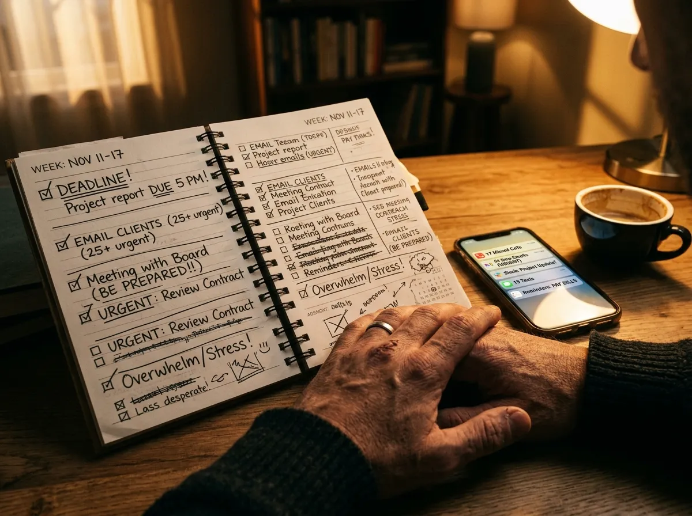
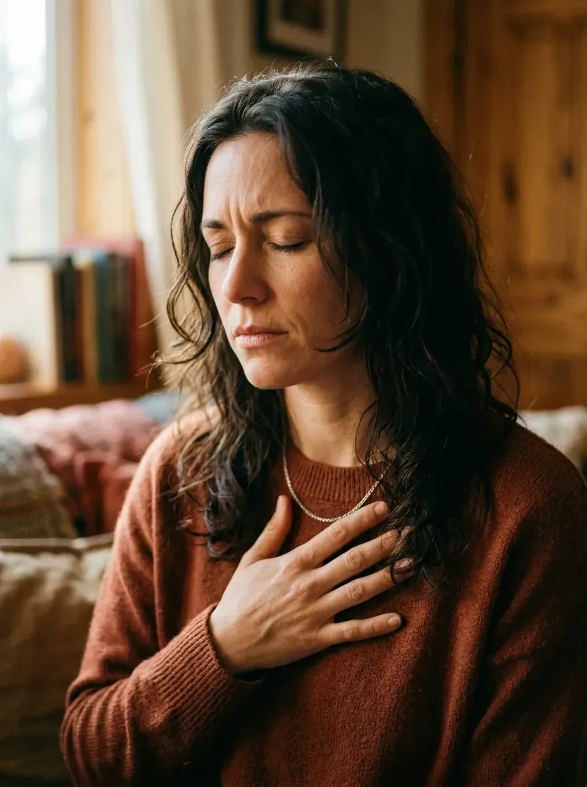
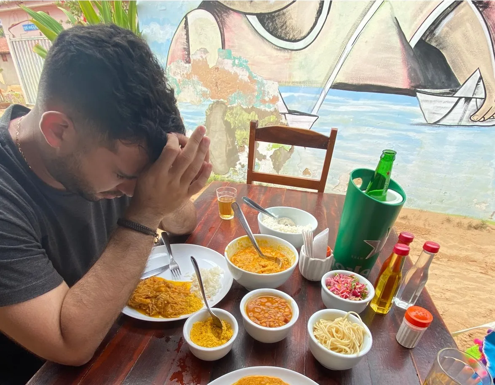
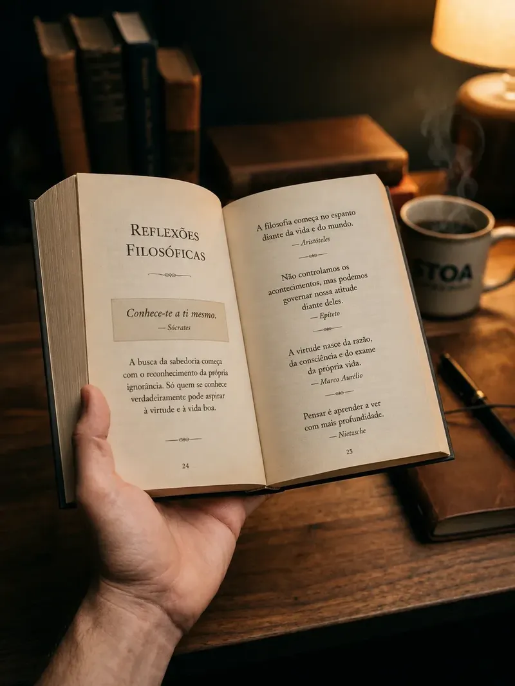
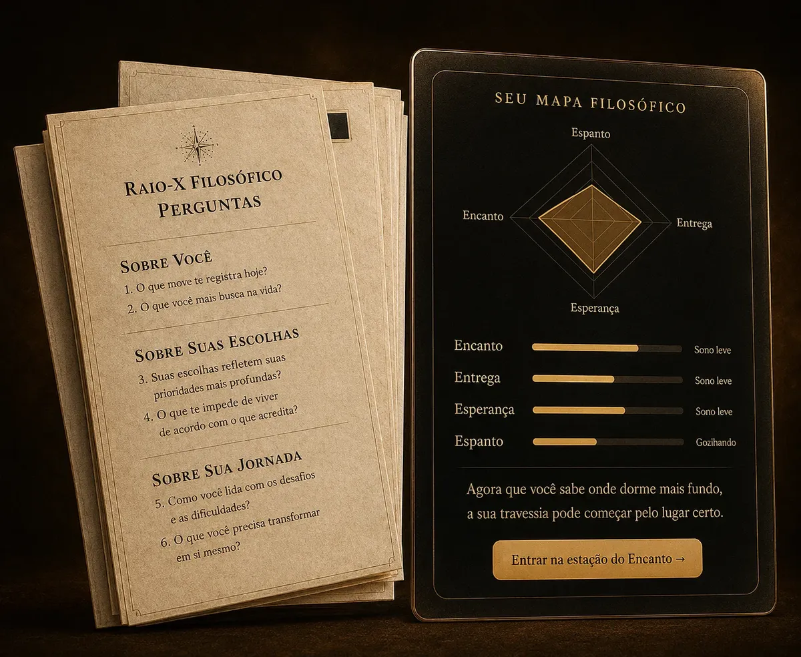
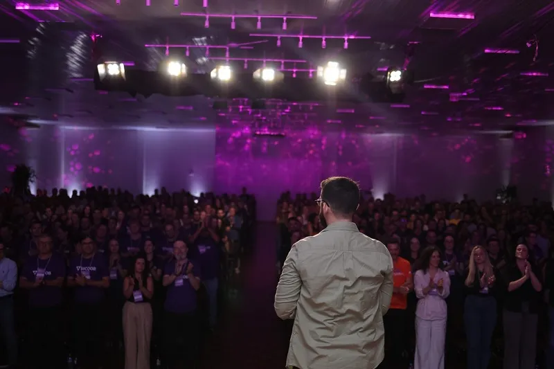
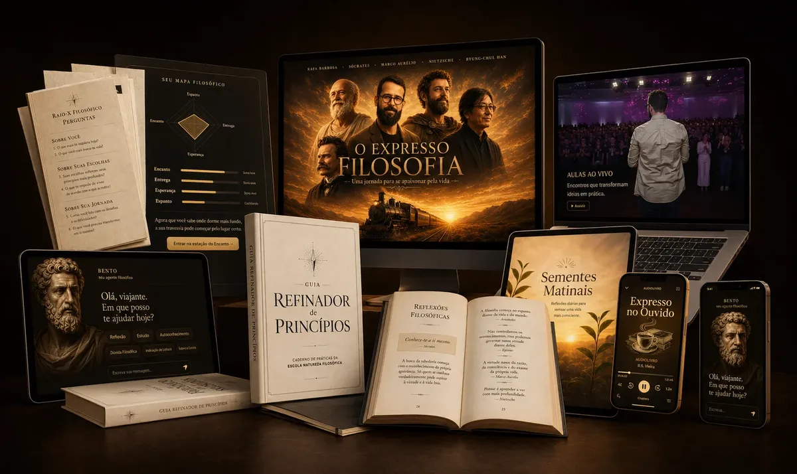

Ex-engenheiro descobre o caminho de 3 passos que tira qualquer pessoa do automático e devolve o entusiasmo pela vida em poucas semanas, e você já pode começar a aplicar ainda hoje...
Não é meditação, não é lei da atração e não é mais um conteúdo motivacional que você esquece em uma semana...
ATÉ QUANDO VOCÊ VAI DEIXAR A ROTINA ENGOLIR O SEU PROPÓSITO?
Se você já não aguenta mais sentir que está só cumprindo tarefa atrás de tarefa, e sente que até o seu descanso virou mais uma obrigação na sua lista, provavelmente você também...


EU TAMBÉM PASSEI POR ISSO
Então, vai uma breve história de como um engenheiro frustrado se tornou a nova voz da filosofia no Brasil.
Nessa época da foto ao lado, eu trabalhava como engenheiro. Eu tinha um ótimo emprego, família presente, relacionamentos estáveis. Por fora, minha vida funcionava.
Por dentro, eu me sentia vazio. E eu ainda me sentia culpado por isso.

Foi numa viagem pras praias do Ceará que decidi que essa situação precisava mudar.
Eu não conseguia relaxar em lugar nenhum. Não sabia se entrava no mar, se lia um livro, se tocava violão.
Até que um dia, num restaurante, vi um homem fechar os olhos pra agradecer pela comida. Tentei fazer igual. E não consegui. Minha cabeça não parava.
Naquele instante percebi algo pior: eu não conseguia sentir nada com clareza. Nem felicidade, nem tristeza, nem gratidão.
Ali eu comecei a chorar.

Mergulhei de cabeça estudando TUDO sobre filosofia
Estoicismo, existencialismo, filosofia clássica, diferentes formas de compreender o nosso viver.
Minha mãe olhava aquilo e dizia: "Eu sempre desconfiei que você não batia bem da cabeça, mas depois dessa invenção de estudar filosofia, agora eu tive certeza."
Mas foi justamente ali que eu descobri uma pista: uma palavra grega chamada pathos. A capacidade humana de ser tocado pelo que acontece.
Foi aí que entendi: eu não precisava só organizar melhor a rotina. Eu precisava reaprender a me apaixonar pela vida.

Um caminho capaz de fazer qualquer pessoa reaprender a se apaixonar pela vida em poucas semanas, mesmo sem nunca ter estudado filosofia.
Mesmo que você ache que filosofia é complicada demais pra você...
Até mesmo pra quem já testou terapia, produtividade e conteúdo motivacional e não resolveu nada.
O Filosofia Viva é o programa onde eu resolvi colocar TODO o caminho que me fez sair da vida administrada e me apaixonar de novo pela minha própria vida.
Mas não acredite apenas no que eu estou falando...
CURSOS DE AUTOAJUDA, PRODUTIVIDADE E CONTEÚDO MOTIVACIONAL...
- ✕ Te enchem de frase bonita sem nenhuma prática real
- ✕ Prometem transformação instantânea e depois te deixam sozinha
- ✕ Exigem que você já saiba o que fazer com a informação
- ✕ Não têm nenhuma base em filosofia de verdade, só opinião
- ✕ Cheios de gente que compra e nunca aplica nada
FILOSOFIA VIVA
- ✓ Rafa já foi apresentado como a nova voz da filosofia no Brasil
- ✓ Baseado em mais de 2.000 anos de filosofia, traduzido pra linguagem simples
- ✓ Vem com prática guiada, não só teoria
- ✓ Você não precisa saber nada de filosofia pra começar
- ✓ Garantia incondicional de 15 dias
DENTRO DO FILOSOFIA VIVA VOCÊ TERÁ:
- Todo o caminho que me fez sair da vida administrada e voltar a me apaixonar pela minha vida
- Conteúdo direto e traduzido pra vida real, sem citação difícil de autor
- O Raio X do Propósito, pra você descobrir exatamente onde focar primeiro
- O curso Expresso Filosofia com as 4 tradições que sustentam a vida apaixonada
- O GRP, caderno de prática guiada pra transformar teoria em hábito
- Aulas curtas e gravadas, pra assistir onde e quando quiser
- O Benedito, assistente de IA disponível 24h pras suas dúvidas
DE FORMA SIMPLIFICADA, VOCÊ TERÁ RESULTADOS EM APENAS 4 PASSOS:

Você faz o Raio X do Propósito e descobre exatamente qual pilar da sua vida (entusiasmo, entrega, esperança ou encanto) está pedindo atenção agora.
Você assiste o Expresso Filosofia e conhece as 4 lentes que vão mudar sua forma de olhar pra própria vida.
Você usa o GRP todo dia, por poucos minutos, pra treinar essas lentes até elas virarem parte de quem você é.
Você vai dormir sentindo que realmente viveu aquele dia, não que só sobreviveu a ele.
ELA TINHA MEDO DE NÃO ENTENDER NADA DE FILOSOFIA, E HOJE CITA O RAFA COM OS PRÓPRIOS CLIENTES DELA
Conheça a história de uma aluna terapeuta, de 57 anos, que quase desistiu antes de começar por achar que filosofia não era pra ela.
Eu percebi que a maioria das recaídas pra vida administrada acontece bem cedo, antes do primeiro café.
Por isso criei as Sementes Matinais: uma reflexão minha de 5 minutos, todo santo dia, direto no seu WhatsApp. 365 manhãs no total.

Empresas e eventos por todo o Brasil pagam mais de R$10.000 pra trazer essa palestra ao vivo.
Você vai receber a gravação completa, sobre como viver com presença sem adiar o que importa.
Nem sempre você consegue parar e olhar pra uma tela.
Por isso os 4 episódios do Expresso Filosofia também estão em áudio, pra você ouvir andando, arrumando a casa ou se arrumando pra sair.
Um agente de inteligência artificial treinado nos princípios do Expresso Filosofia, disponível 24 horas por dia.
Você pode conversar com ele sobre qualquer situação que estiver vivendo e encontrar o princípio certo pra refletir naquele momento.
O VALOR DE TUDO QUE VOCÊ ESTÁ PRESTES A RECEBER É DE NADA MAIS, NADA MENOS QUE R$3.850

Porque qualquer pessoa que já pesquisou sobre desenvolvimento pessoal sabe que isso é o mínimo que você pagaria se fosse atrás de cada peça separada.
E já que estamos falando de um caminho que vai te fazer sentir viva todos os dias, deixa eu te perguntar...
E se tudo que você vai receber aqui pudesse te dar de volta a capacidade de sentir entusiasmo, entrega, esperança e encanto pela sua própria vida, sem precisar largar seu emprego ou mudar sua rotina inteira...
... IRIA VALER A PENA?E se tudo que eu te mostrei até aqui pudesse te fazer parar de só administrar seus dias, e realmente voltar a vivê-los...
... IRIA VALER A PENA?E se tudo que eu te mostrei até aqui pudesse te fazer, daqui a alguns meses, olhar pra trás e sentir que você realmente esteve presente na sua própria vida...
... IRIA VALER A PENA?ENTRANDO HOJE NO FILOSOFIA VIVA VOCÊ VAI RECEBER:
- ✓ Acesso Imediato ao Filosofia Viva (Raio X + Expresso Filosofia + GRP) R$1.997,00
- ✓ Bônus 1: Sementes Matinais R$497,00
- ✓ Bônus 2: Palestra "A Vida é Pra Já" R$997,00
- ✓ Bônus 3: Expresso no Ouvido R$197,00
- ✓ Bônus 4: Benedito, assistente de IA R$197,00
CONHEÇA SEU PROFESSOR
Rafa Barbosa é filósofo, professor e palestrante. Ex-engenheiro.
Assim como você, ele viveu a realidade de ter uma vida que funcionava por fora, e por dentro se sentia vazio.
Até que ele encontrou na filosofia um caminho pra recuperar o entusiasmo, a entrega, a esperança e o encanto que tinha perdido.
Hoje, ele já passou por mais de 80 mil pessoas em palestras presenciais, e é apresentado por rádios, TVs e podcasts como a nova voz da filosofia no Brasil.
EXPERIMENTE POR 15 DIAS, SEM COMPROMISSO!
Você pode testar o Filosofia Viva por 15 dias. Se você não sentir que faz sentido pra sua vida, devolvemos 100% do seu investimento.
Afinal, eu não colocaria toda a minha reputação como a nova voz da filosofia no Brasil em jogo por causa de R$21 por mês, né?
AINDA TEM DÚVIDAS?
ENTRANDO HOJE NO FILOSOFIA VIVA VOCÊ VAI RECEBER:
- ✓ Acesso Imediato ao Filosofia Viva (Raio X + Expresso Filosofia + GRP) R$1.997,00
- ✓ Bônus 1: Sementes Matinais R$497,00
- ✓ Bônus 2: Palestra "A Vida é Pra Já" R$997,00
- ✓ Bônus 3: Expresso no Ouvido R$197,00
- ✓ Bônus 4: Benedito, assistente de IA R$197,00